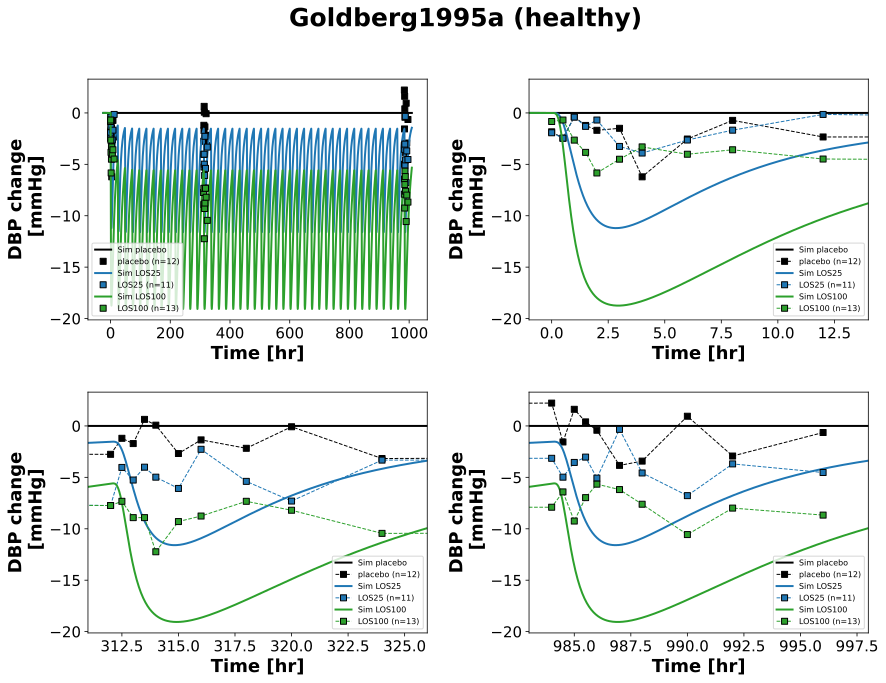
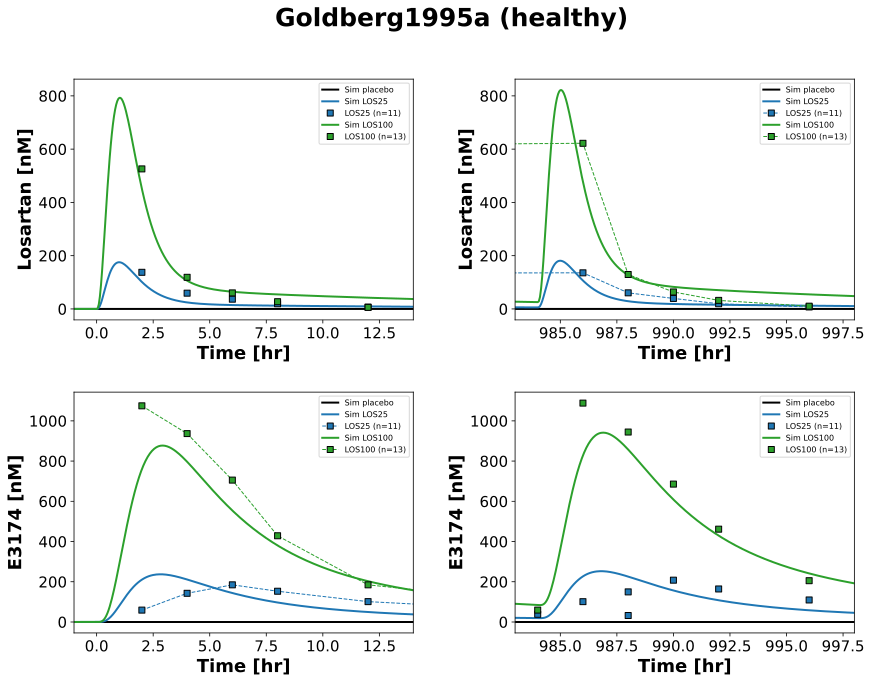
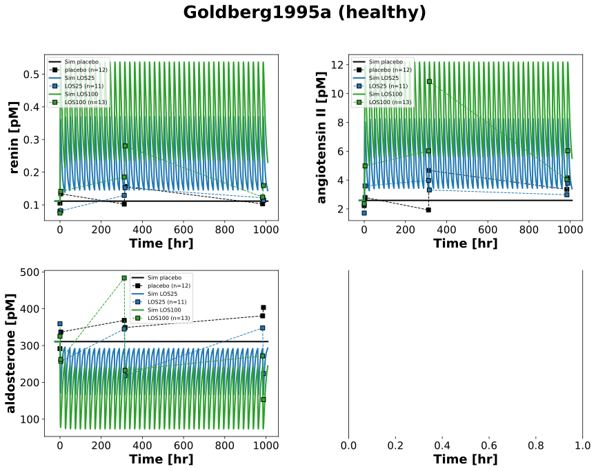

|  |
|  |
|  |
../../../../experiments/studies/goldberg1995a.py
from typing import Dict
from sbmlsim.data import DataSet, load_pkdb_dataframe
from sbmlsim.fit import FitMapping, FitData
from sbmlutils.console import console
from pkdb_models.models.losartan.experiments.base_experiment import (
LosartanSimulationExperiment,
)
from pkdb_models.models.losartan.experiments.metadata import (
Tissue, Route, Dosing, ApplicationForm, Health, \
Fasting, LosartanMappingMetaData, Coadministration, Genotype,
)
from sbmlsim.plot import Axis, Figure
from sbmlsim.simulation import Timecourse, TimecourseSim
from pkdb_models.models.losartan.helpers import run_experiments
class Goldberg1995a(LosartanSimulationExperiment):
"""Simulation experiment of Goldberg1995a."""
info = {
"[Cve_los]": "losartan",
"[Cve_e3174]": "exp3174",
"[ren]": "renin",
#"ren_change": "ren_ratio",
"[ang2]": "ang2",
#"ang2_change": "ang2_ratio",
"[ald]": "ald",
#"ald_change": "ald_change",
"DBP_change": "dbp_change",
}
colors = {
"placebo": "black",
"LOS25": "tab:blue",
"LOS100": "tab:green",
}
losp_doses = {
"placebo": 0, # [mg]
"LOS25": 25, # [mg]
"LOS100": 100, # [mg]
}
interventions = list(losp_doses.keys())
def datasets(self) -> Dict[str, DataSet]:
dsets = {}
for fig_id in ["Fig2", "Fig3", "Fig4", "Fig5", "Fig6"]:
df = load_pkdb_dataframe(f"{self.sid}_{fig_id}", data_path=self.data_path)
for label, df_label in df.groupby("label"):
dset = DataSet.from_df(df_label, self.ureg)
# unit conversion to mole/l
# Fig4
if label.endswith("_renin"):
dset.unit_conversion("mean", 1 / self.Mr.ren)
# Fig5
elif label.endswith("_ang2"):
dset.unit_conversion("mean", 1 / self.Mr.ang2)
# Fig6
elif label.endswith("_ald"):
dset.unit_conversion("mean", 1 / self.Mr.ald)
elif label.endswith("_ald_change"):
dset.unit_conversion("mean", 1 / self.Mr.ald)
# Fig3
elif label.endswith("_losartan"):
dset.unit_conversion("mean", 1 / self.Mr.los)
elif label.endswith("_exp3174"):
dset.unit_conversion("mean", 1 / self.Mr.e3174)
dsets[label] = dset
# console.print(dsets)
# console.print(dsets.keys())
return dsets
def simulations(self) -> Dict[str, TimecourseSim]:
Q_ = self.Q_
tcsims = {}
for intervention in self.interventions:
tcs = Timecourse(
start=0,
end=24 * 60, # [min]
steps=500,
changes={
**self.default_changes(),
"ren_ref": Q_(5.02, "pg/ml") / self.Mr.ren, # mean from runin data
"[ren]": Q_(5.02, "pg/ml") / self.Mr.ren, # mean from runin data
"ang2_ref": Q_(2.71, "pg/ml") / self.Mr.ang2, # mean from runin data
"[ang2]": Q_(2.71, "pg/ml") / self.Mr.ang2, # mean from runin data
"ald_ref": Q_(11.2, "ng/dl") / self.Mr.ald, # mean from runin data
"[ald]": Q_(11.2, "ng/dl") / self.Mr.ald, # mean from runin data
},
)
tc0 = Timecourse(
start=0,
end=24 * 60, # [min]
steps=500,
changes={
"PODOSE_los": Q_(self.losp_doses[intervention], "mg") * self.Mr.los/self.Mr.losp,
"ren_ref": Q_(5.02, "pg/ml") / self.Mr.ren, # mean from runin data
"[ren]": Q_(5.02, "pg/ml") / self.Mr.ren, # mean from runin data
"ang2_ref": Q_(2.71, "pg/ml") / self.Mr.ang2, # mean from runin data
"[ang2]": Q_(2.71, "pg/ml") / self.Mr.ang2, # mean from runin data
"ald_ref": Q_(11.2, "ng/dl") / self.Mr.ald, # mean from runin data
"[ald]": Q_(11.2, "ng/dl") / self.Mr.ald, # mean from runin data
},
)
tc1 = Timecourse(
start=0,
end=24 * 60, # [min]
steps=500,
changes={
"PODOSE_los": Q_(self.losp_doses[intervention], "mg") * self.Mr.los/self.Mr.losp,
},
)
tc2 = Timecourse(
start=0,
end=25 * 60, # [min]
steps=500,
changes={
"PODOSE_los": Q_(self.losp_doses[intervention], "mg") * self.Mr.los/self.Mr.losp,
},
)
tcsims[f"po_{intervention}"] = TimecourseSim(
[tcs] + [tc0] + [tc1 for _ in range(40)] + [tc2],
time_offset=-24*60,
)
# console.print(tcsims)
return tcsims
def fit_mappings(self) -> Dict[str, FitMapping]:
mappings = {}
for k, sid in enumerate(self.info):
name = self.info[sid]
for intervention in self.interventions:
if intervention == "placebo" and sid in {"[Cve_los]", "[Cve_e3174]"}:
continue
mappings[f"fm_po_{intervention}_{name}"] = FitMapping(
self,
reference=FitData(
self,
dataset=f"{intervention}_{name}",
xid="time",
yid="mean",
yid_sd=None,
count="count",
),
observable=FitData(
self, task=f"task_po_{intervention}", xid="time", yid=sid,
),
metadata=LosartanMappingMetaData(
tissue=Tissue.PLASMA,
route=Route.PO,
application_form=ApplicationForm.TABLET,
dosing=Dosing.SINGLE,
health=Health.HEALTHY,
fasting=Fasting.FASTED,
coadministration=Coadministration.NONE,
),
)
# console.print(mappings)
return mappings
def figures(self) -> Dict[str, Figure]:
return {
**self.fig2(),
**self.fig3(),
**self.fig4_5_6(),
}
def fig2(self) -> Dict[str, Figure]:
fig = Figure(
experiment=self,
sid="Fig2",
num_rows=2,
num_cols=2,
name=f"{self.__class__.__name__} (healthy)",
)
plots = fig.create_plots(
xaxis=Axis(self.label_time, unit=self.unit_time),
yaxis=Axis(self.labels["DBP_change"], unit=self.units["DBP_change"]),
legend=True
)
plots[0].xaxis.unit = "hr" # week see: https://github.com/matthiaskoenig/sbmlsim/issues/167
# week 0
plots[1].xaxis.min = -1
plots[1].xaxis.max = 14
# week 2
plots[2].xaxis.min=13 * 24 - 1
plots[2].xaxis.max = 13 * 24 + 14
# week 6
plots[3].xaxis.min = 41 * 24 - 1
plots[3].xaxis.max = 41 * 24 + 14
for k in range(4):
sid = "DBP_change"
name = "dbp_change"
for intervention in self.interventions:
# simulation
plots[k].add_data(
task=f"task_po_{intervention}",
xid="time",
yid=sid,
label=f"Sim {intervention}",
color=self.colors[intervention],
)
# data
plots[k].add_data(
dataset=f"{intervention}_{name}",
xid="time",
yid="mean",
yid_sd=None,
count="count",
label=f"{intervention}",
color=self.colors[intervention],
linestyle="" if k==0 else "--"
)
return {
fig.sid: fig,
}
def fig3(self) -> Dict[str, Figure]:
fig = Figure(
experiment=self,
sid="Fig3",
num_rows=2,
num_cols=2,
name=f"{self.__class__.__name__} (healthy)",
)
plots = fig.create_plots(
xaxis=Axis(self.label_time, unit=self.unit_time), legend=True
)
# week 0
plots[0].xaxis.min = -1
plots[0].xaxis.max = 14
plots[2].xaxis.min = -1
plots[2].xaxis.max = 14
# week 6
plots[1].xaxis.min = 41 * 24 - 1
plots[1].xaxis.max = 41 * 24 + 14
plots[3].xaxis.min = 41 * 24 - 1
plots[3].xaxis.max = 41 * 24 + 14
plots[0].set_yaxis(self.label_los, unit=self.unit_los)
plots[1].set_yaxis(self.label_los, unit=self.unit_los)
plots[2].set_yaxis(self.label_e3174, unit=self.unit_e3174)
plots[3].set_yaxis(self.label_e3174, unit=self.unit_e3174)
for k in range(4):
if k < 2:
sid = "[Cve_los]"
else:
sid = "[Cve_e3174]"
name = self.info[sid]
for intervention in self.interventions:
# simulation
plots[k].add_data(
task=f"task_po_{intervention}",
xid="time",
yid=sid,
label=f"Sim {intervention}",
color=self.colors[intervention],
)
# data
if intervention == "placebo":
continue
plots[k].add_data(
dataset=f"{intervention}_{name}",
xid="time",
yid="mean",
yid_sd=None,
count="count",
label=f"{intervention}",
color=self.colors[intervention],
linestyle="" if k in {0, 3} else "--"
)
return {
fig.sid: fig,
}
def fig4_5_6(self) -> Dict[str, Figure]:
fig = Figure(
experiment=self,
sid="Fig4_5_6",
num_rows=2,
num_cols=2,
name=f"{self.__class__.__name__} (healthy)",
)
plots = fig.create_plots(
xaxis=Axis(self.label_time, unit=self.unit_time), legend=True
)
plots[0].set_yaxis(self.labels["[ren]"], unit=self.units["[ren]"])
plots[1].set_yaxis(self.labels["[ang2]"], unit=self.units["[ang2]"])
plots[2].set_yaxis(self.labels["[ald]"], unit=self.units["[ald]"])
for k, sid in enumerate(["[ren]", "[ang2]", "[ald]"]):
name = self.info[sid]
for intervention in self.interventions:
# simulation
plots[k].add_data(
task=f"task_po_{intervention}",
xid="time",
yid=sid,
label=f"Sim {intervention}",
color=self.colors[intervention],
)
# data
plots[k].add_data(
dataset=f"{intervention}_{name}",
xid="time",
yid="mean",
yid_sd=None,
count="count",
label=f"{intervention}",
color=self.colors[intervention],
)
return {
fig.sid: fig,
}
if __name__ == "__main__":
run_experiments(Goldberg1995a, output_dir=Goldberg1995a.__name__)
{kind=link}
{kind=link}
{kind=link}